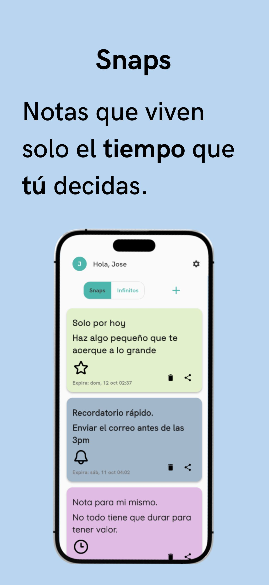
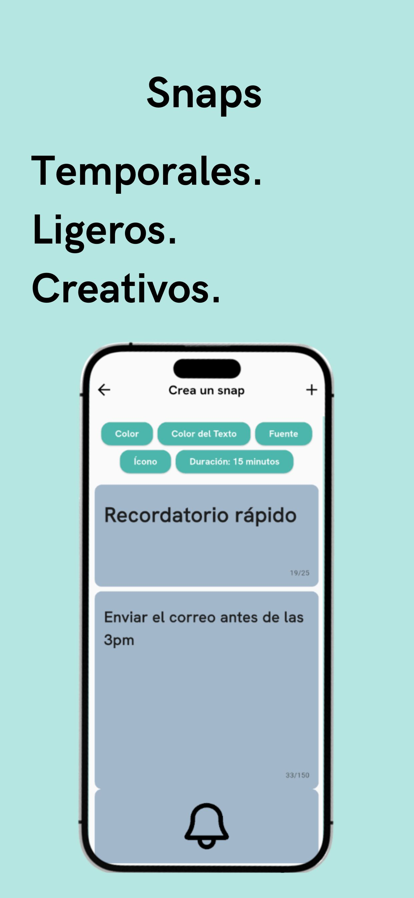
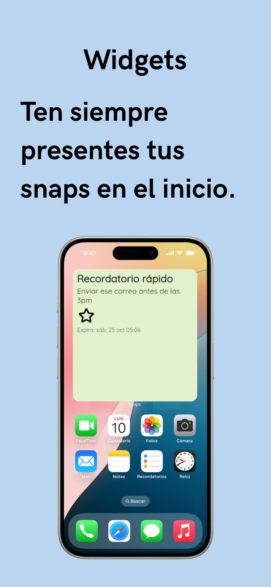

Notas que viven el tiempo que tú decides. Cuando el timer llega a cero desaparecen para siempre, sin archivar, sin acumulación, sin rastro.
Snaps nació de una idea simple: ¿qué pasaría si tus notas tuvieran vida propia? No todo merece ser guardado para siempre, a veces solo necesitas capturar un pensamiento y luego dejarlo ir.
Con Snaps, tú decides cuánto tiempo vive cada nota: 5 minutos, 2 horas o 3 días. Cuando el tiempo termina, la nota desaparece sin dejar rastro. La efimeralidad como característica, no como error, el olvido, por diseño.
Cada nota tiene su propio timer, de minutos a días. La expiración corre en el backend, no en el dispositivo.
Colores y estilos por nota, para identificar cada snap de un vistazo.
Notas activas visibles en la pantalla de inicio, con el tiempo restante actualizándose en vivo.
Redis elimina la nota al llegar a cero. El borrado es real, permanente y sin recuperación posible.
Flutter compila a código nativo en ambas plataformas, animaciones fluidas a 60fps.
Go maneja las requests con mínimo overhead; Redis gestiona los timers con TTL nativo por clave.



App nativa iOS/Android. UI con widgets personalizados y sincronización en tiempo real.
API REST de alto rendimiento: autenticación, creación de snaps y coordinación con Redis.
Notas con TTL nativo. Al expirar la clave, Redis la elimina sola, sin crons, sin jobs externos.